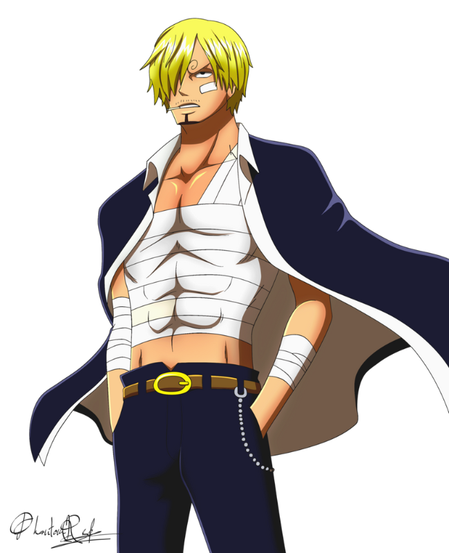

Monkey D. Luffy, also known as Straw Hat Luffy,
is the main protagonist of the One Piece franchise.
He is the captain of the Straw Hat Pirates that
wants to find the One Piece

Sanji
"Black Leg" Sanji,born as Vinsmoke Sanji,
is the cook of the Straw Hat Pirates
and one of the Senior Officers of the Straw Hat
Grand Fleet.He is the fifth member of the crew
and the fourth to join, doing so at the end of the
Baratie Arc.
Usopp
"God" Usopp is the sniper of the Straw Hat Pirates
and one of the Senior Officers of the Straw Hat Grand
Fleet.He is the fourth member of the crew and the
third to join, doing so at the end of the Syrup Village
Arc. Although he left the crew during the Water 7 Arc.